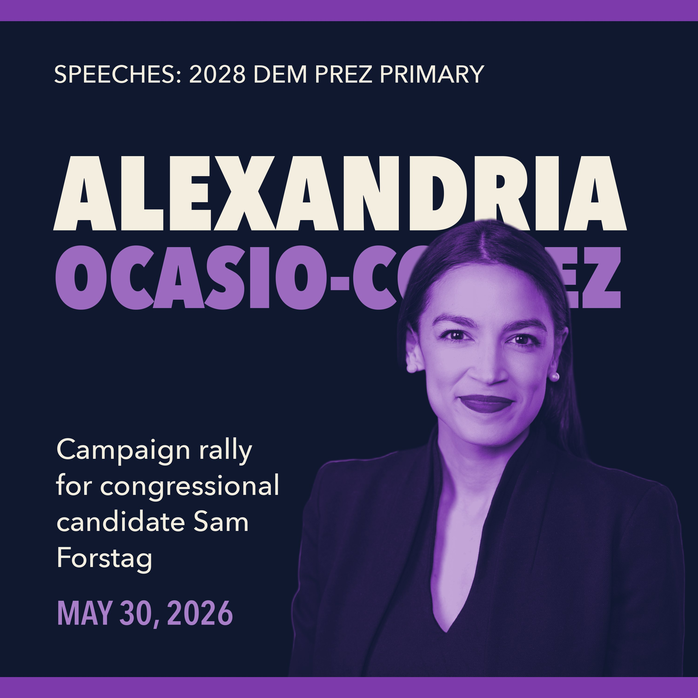

SPEECHES: 2028 DEM PREZ PRIMARY · EP. 16
May 30, 2026 · 0:24:38
Rep. Alexandria Ocasio-Cortez headlines a rally in Missoula, Montana, on May 30, 2026, for congressional candidate Sam Forstag — attacking corporate influence in politics and making the case for grassroots organizing across red and blue states.
One short email when a new speech lands. No spam, unsubscribe anytime.
✓ You're subscribed — we'll email you when new speeches land.